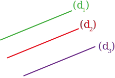

|
Chapitre 4
|
- Parallèles et perpendiculaires
|
Activité Introduction
Les figures ci-dessous représentent cinq étapes successives permettant de construire, par pliage, la droite $(d_2)$ perpendiculaire à la droite $(d_1)$ et passant par le point A.
Sur un papier uni, tracer une droite $(d_1)$ et placer un point A n'appartenant pas à la droite.
Plier la feuille selon la droite $(d_1)$.

Plier une seconde fois la feuille selon un pli passant par A, enfaisant coïncider les deux demi-droites rouges.

Marquer les plis puis déplier la feuille.
Tracer la droite $(d_2)$ à l'aide du pli passant par A.
On note l'angle droit à l'aide d'un carré rouge.
- Réaliser chacune de ces étapes en suivant les consignes indiquées.
- Construire, de même, la droite $(d_3)$ perpendiculaire à $(d_2)$ et passant par A.
-
- Que peut-on dire de la position de la droite $(d_1)$ par rapport à la droite $(d_3)$ ?
-
Compléter la phrase suivante à l'aide des symboles $\perp$ (perpendiculaire) ou $\parallel$ (parallèle).
Par construction, nous avons $(d_1)$ ..... $(d_2)$ et $(d_3)$ ..... $(d_2)$, donc $(d_1)$ ..... $(d_3)$.
Définition :
Droites perpendiculaires :
Deux droites perpendiculaires sont deux droites qui se coupent en formant quatre angles droits.
Exemple :
H est appelé pied de la perpendiculaire à $(d)$.
Remarques :
- $(d')$ se lit "d prime".
- Pour noter deux droites perpendiculaires, on utilise le symbole $\perp$
Ici $(d)\perp(d')$
Droites parallèles :
Deux droites parallèles sont deux droites qui ne sont pas sécantes.
Exemple :
$(d)$ et $(d')$ sont parallèles, on note cela $(d)\parallel(d')$

Remarque :
- Lorsque deux droites sont confondues (qu'elles sont superposées), on dit aussi qu'elles sont parallèles.
Propriétés :
Parallèles :
Propriété :
Si deux droites sont parallèles à une même troisième droite, alors ces droites sont parallèles entre elles.
Exemple :
$\textcolor{#43a047}{(d_1)}\parallel\textcolor{#7C4DA5}{(d_3)}$ et $\textcolor{#e53935}{(d_2)}\parallel\textcolor{#7C4DA5}{(d_3)}$ donc $\textcolor{#43a047}{(d_1)}\parallel\textcolor{#e53935}{(d_2)}$

Propriété :
Si deux droites sont perpendiculaires à une même troisième droite, alors ces droites sont parallèles entre elles.
Exemple :
$\textcolor{#43a047}{(d_1)}\perp\textcolor{#7C4DA5}{(d_3)}$ et $\textcolor{#e53935}{(d_2)}\perp\textcolor{#7C4DA5}{(d_3)}$ donc $\textcolor{#43a047}{(d_1)}\parallel\textcolor{#e53935}{(d_2)}$
Perpendiculaires :
Propriété :
Si deux droites sont parallèles et que l'une d'elle est perpendiculaire a une troisième droite, alors cette troisième droite est aussi perpendiculaire à l'autre.
Exemple :
$\textcolor{#43a047}{(d_1)}\parallel\textcolor{#e53935}{(d_2)}$ et $\textcolor{#43a047}{(d_1)}\perp\textcolor{#7C4DA5}{(d_3)}$ donc $\textcolor{#e53935}{(d_2)}\perp\textcolor{#7C4DA5}{(d_3)}$
Distance d'un point à une droite :
La distance d'un point à une droite est longueur du plus court chemin entre ce point et la droite.
La distance d'un point A à une droite $(d)$ est la longueur du segment reliant le point A au pied de la perpendiculaire à $(d)$ passant par A.
Exemple :
La distance du point A à la droite $(d)$ est la longueur AH.
Constructions :
Droites perpendiculaires :
Droites parallèles :